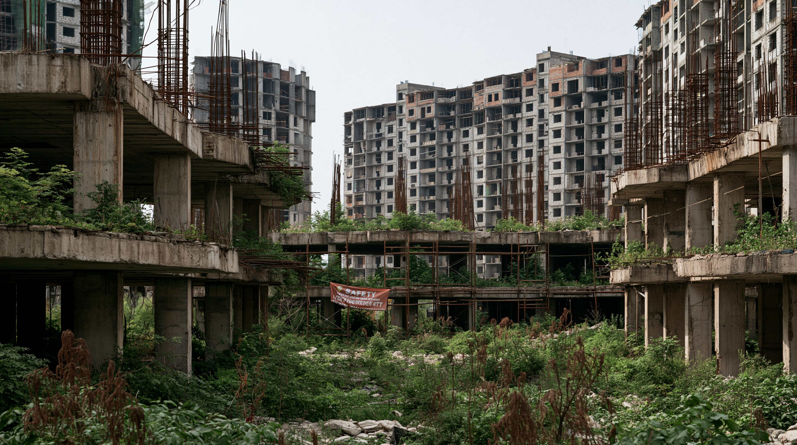

（2026年第2四半期）
（2026年7月・70都市の前年同月比）
（2026年上半期）
（2026年上半期の前年同期比）
（2026年7月・16〜24歳、在学者を除く）
（2026年上半期）
01論点 — 値上がりした側と、下がり続けている側
2026年7月15日、国家統計局は第2四半期の国内総生産を発表した。実質成長率は4.3%、名目成長率は5.9%。名目が実質を上回ったのは3年ぶりで、その差である国内総生産デフレーターは1.6%のプラスとなった。12期続いた物価の下落が、ここで止まった。
物価が上がることそのものは、中国政府が長く求めてきた状態である。ところが同じ日に発表された他の数字は、逆を向いていた。不動産開発投資は18.0%減、固定資産投資は5.7%減、社会消費品小売総額は1.3%増にとどまる。翌月の統計では新築住宅価格が37か月連続で下落した。
上がったものと下がったものを分けると、境界がはっきり見える。上がったのは生産者物価、つまり鉄鋼・石炭・非鉄といった上流の素材価格である。6月の生産者物価は前年同月比4.1%増と4年ぶりの高さになった。一方、消費者物価は1.0%増にとどまる。
物価下落を止めたのは、需要が戻ったからではない。供給を絞る政策と、資源価格の上昇である。この違いは、中国経済が転換点を越えたかどうかの判断を左右する。
中国の物価下落を止めたのは何だったのか。そしてそれは、家計が使うお金の側にも届いているのか。
02時系列 — 規制から6年、何が積み上がったか
いまの物価は、2020年に始まった不動産規制の帰結である。開発業者の借入を止め、土地が売れなくなり、地方政府の収入が消え、家計の資産が目減りした。その順番で見ていく。
中国人民銀行と住宅都市農村建設部が、開発業者の借入に3つの基準を設けた。資産負債率70%以下、純負債資本倍率100%以下、短期債務に対する現金1倍以上。恒大集団は3つすべてに抵触していた。
恒大集団がドル建て債2本の利払いを履行できなかった。アジアのドル建て債市場に大きな衝撃が走り、他の開発業者の資金調達も止まった。
碧桂園が4億7,000万香港ドルの元本を期日に支払えなかった。恒大に続く大手の不履行となり、業界の縮小が一過性ではないことがはっきりした。
全国人民代表大会常務委員会が、地方政府の債務上限を6兆元引き上げ、新規の専項債から年8,000億元を5年間充てる計画を承認した。合計10兆元。バラック改造にともなう2兆元は2029年以降に繰り延べられた。政府が認定した「隠れ債務」は2023年末で14.3兆元、2028年までに2.3兆元へ減らす計画である。
中央財経委員会が、低価格競争の抑制と過剰設備の秩序ある退出を打ち出した。10の重点産業に2年間の計画が示され、2025〜26年の生産目標は2024年より低く設定された。需要を増やす政策ではない。供給を減らして価格を戻す方針である。
第2四半期の国内総生産デフレーターが1.6%となり、12期連続のマイナスが止まった。同じ月、新築住宅価格は37か月連続で下落し、上半期の土地譲渡収入は9,778億元、前年同期比31.5%減となった。
北京が8月7日に住宅購入制限を緩めた。五環路内で購入する非居住者の社会保険・納税の要件を2年から1年へ短縮し、住宅積立金の融資上限も引き上げた。上海は2月、深圳は4月にすでに緩和しており、これで四大都市がそろった。年初から全国で導入された住宅関連の政策は680件を超える。

035つの視点 — 同じ数字を、誰がどう読むか
デフレーターがプラスに転じたという一つの事実は、立場によってまったく違う意味を持つ。
| 主体 | いま最も重視するもの | 次に打つ手 |
|---|---|---|
| 中央政府 | 成長目標の達成と金融リスクの抑制 | 供給側の設備調整の継続と、消費補助の延長 |
| 地方政府 | 消えた収入をどう埋めるか | 債務の借換えと、中央への財源要請 |
| 都市部の家計と若年層 | 雇用と資産価値 | 支出の抑制と貯蓄の積み増し |
| 開発業者と銀行 | 在庫の消化と資金繰り | 値下げによる販売と、新規着工の見送り |
| 貿易相手国 | 流入する安価な製品への対応 | 関税と数量枠による輸入の制限 |
04データ — 消えた収入と、上下に割れた指標
数字を2つの角度から見る。ひとつは地方政府の収入がどれだけ速く減っているか。もうひとつは、2026年上半期の主要指標が、どこで上を向きどこで下を向いたかである。
土地譲渡収入 — 5年目に入った減少
国有土地使用権の譲渡収入の前年比。2021年のピーク8.7兆元から2025年には4.15兆元へ半減した。2026年は上半期だけで9,778億元、前年同期比31.5%減。
出典：財政部の公表値（2022〜2025年はYicai Global、2026年上半期はThe Epoch Timesの各報道で確認）
2026年上半期 — 上を向いた指標と、下を向いた指標
同じ半年の前年同期比。外に売る側と作る側は伸び、国内で買う側と建てる側は縮んでいる。
出典：国家統計局「2026年上半期の国民経済」2026年7月15日公表
05深掘り — 内需は、なぜ戻らないのか
政府は消費を増やそうとしてきた。買い替え補助への配分は2026年に2,500億元。それでも小売の伸びは1.3%にとどまる。金を出しても消費が動かない理由は、家計の側の構造にある。
デフレーターがプラスに転じたことは事実である。ただしそれは、供給を絞る政策と資源価格が作った数字であって、家計が買う側で起きた変化ではない。転換が本物かどうかを測る指標は、デフレーターではなく、住宅価格が下げ止まるか、そして小売の伸びが所得の伸びに追いつくかのほうにある。どちらもまだ、その手前にある。8月に四大都市がそろって購入制限を緩めたのは、供給を絞るだけでは足りないという判断の表れだろう。